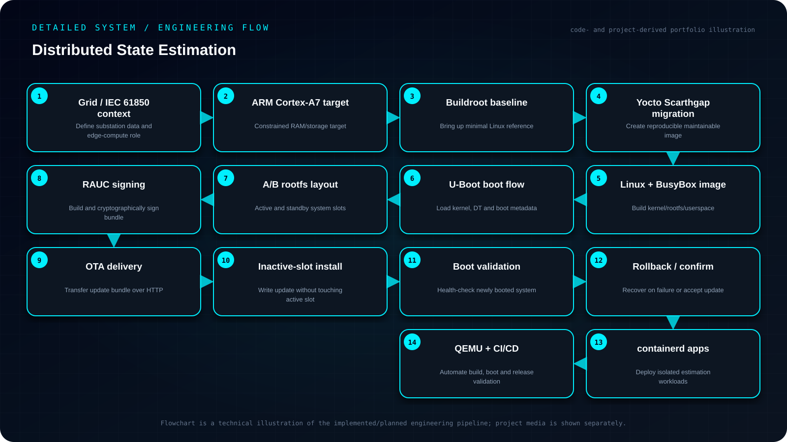

Objective
Build a secure, reproducible embedded-Linux edge platform for distributed state-estimation workloads, with maintainable Yocto builds, signed RAUC A/B OTA updates, containerized application deployment and QEMU-based validation on a constrained ARM target.
- Target the ARM Cortex-A7 edge hardware and its memory/resource constraints.
- Replace the initial Buildroot baseline with a maintainable Yocto Scarthgap image workflow.
- Provide signed, rollback-capable A/B OTA updates through RAUC and U-Boot.
- Run state-estimation applications in a lightweight containerd environment and validate releases before deployment.
My contribution
- Built a minimal Linux image first with Buildroot and later migrated the platform to Yocto Scarthgap.
- Integrated U-Boot, BusyBox, musl and containerd, and implemented RAUC A/B updates with RSA-4096 signing and rollback logic.
- Used QEMU qemuarm to validate images and update flows against the planned ARM deployment workflow.
System architecture
Bootloader → A/B root filesystem → minimal userspace → container runtime → management layer → state-estimation application containers. OTA bundles are signed, written to the inactive slot and only promoted after successful boot validation.

Read the architecture as text
- Grid / IEC 61850 context — Define substation data and edge-compute role
- ARM Cortex-A7 target — Constrained RAM/storage target
- Buildroot baseline — Bring up minimal Linux reference
- Yocto Scarthgap migration — Create reproducible maintainable image
- Linux + BusyBox image — Build kernel/rootfs/userspace
- U-Boot boot flow — Load kernel, DT and boot metadata
- A/B rootfs layout — Active and standby system slots
- RAUC signing — Build and cryptographically sign bundle
- OTA delivery — Transfer update bundle over HTTP
- Inactive-slot install — Write update without touching active slot
- Boot validation — Health-check newly booted system
- Rollback / confirm — Recover on failure or accept update
- containerd apps — Deploy isolated estimation workloads
- QEMU + CI/CD — Automate build, boot and release validation
Implementation
Built a minimal Linux image first with Buildroot and later migrated the platform to Yocto Scarthgap. Integrated U-Boot, BusyBox, musl and containerd, and implemented RAUC A/B updates with RSA-4096 signing and rollback logic. Used QEMU qemuarm to validate images and update flows. My contribution was the operating-system and deployment layer, not the team's electrical state-estimation algorithms.
Engineering decisions
The main trade-off was minimizing RAM and image complexity without removing the mechanisms needed for recoverable updates and containerized application delivery.
Challenges & debugging
The project required an operating-system and deployment approach suitable for resource-constrained edge devices while still supporting reliable application delivery and remote maintenance.
Validation
Verified A/B update behavior and rollback in QEMU, measured idle-memory behavior on the minimal image, and moved the build process into GitLab CI to make image generation repeatable.
Outcome & boundaries
Reproducible ARM image builds and a signed, recoverable update workflow validated in QEMU.
Project sources
Implementation notes and available project sources. Public code is linked where available; descriptive diagrams are not independent validation.


{kind=link}